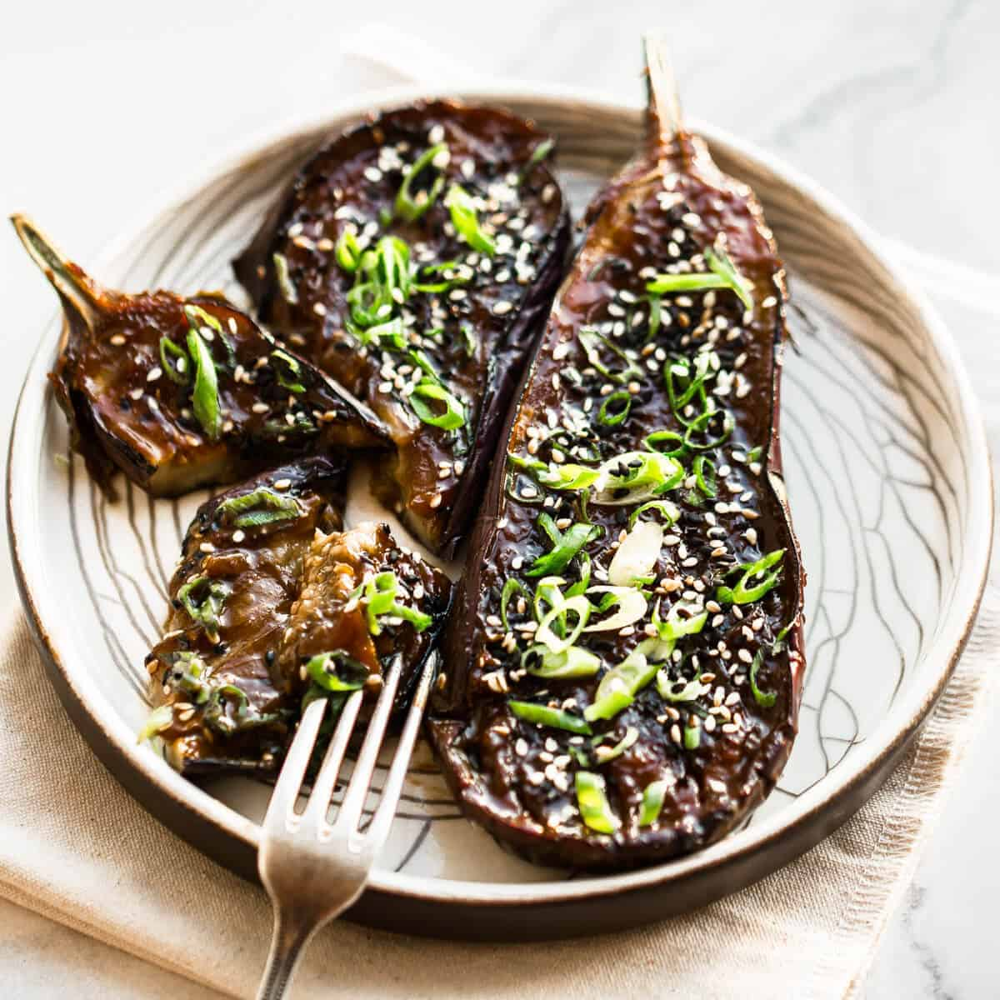

Taught this by a friend, incredibly simple. Here are some other people making it way over complicated
You're going to lightly fry half-eggplants, then smear them with a salty sweet sour paste and roast them until they've basically disolved. Serve over rice.
Preheat oven to 200c
Start your rice cooking in the background
Split a large eggplant lengthwise, and score the face of it with some cross hatched pattern.
Mix up enough sauce to coat the face of each eggplant. Ratio-wise go with more umami than sweet and sour, but it's all up to you. You can even throw in some chili flakes or pepper here.
Fry in a large frying pan that you have a cover for on medium heat. Flip over to cook on the skin side every few minutes. When they are face up make sure to have the pan covered for extra steam.
Once they are most of the way cooked and you have some nice char on the face, transfer face up to a baking tray and cover the entire face with the paste of your choice. Roast until they're totally BBQd to fuck.
Sever laid over the rice, if done well they are basically their own sauce enough for the rice too.
Umami (pick 1)
Sweet (pick 1)
Sour (pick 0-1)